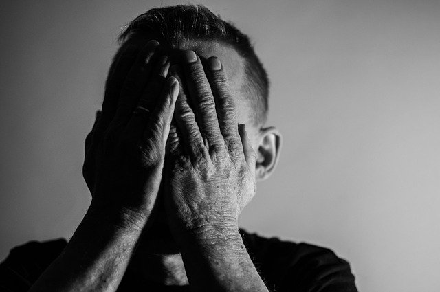

O que é a depressão?
A depressão é uma doença psiquiátrica que produz mudanças no humor e provoca nos pacientes uma tristeza profunda, sem fim, com sentimentos de dor, amargura, desencanto, desesperança, baixa autoestima, culpa e, também, distúrbios do sono e do apetite.
É uma tristeza diferente daquela que se sente quando ocorrem acontecimentos difíceis e desagradáveis, mas que aparecem na vida de todas as pessoas, como a morte de um ente querido, a perda de emprego, os desencontros amorosos, os desentendimentos familiares, as dificuldades econômicas, etc.
Na depressão, a tristeza não desaparece mesmo que não haja uma causa aparente. A pessoa fica deprimida praticamente o tempo todo, sem interesse pelas atividades que antes davam satisfação e prazer. Ela sente que nada pode ser feito para melhorar.
É uma doença que traz grande sofrimento ao indivíduo, envolvendo problemas no trabalho, no meio familiar e na comunidade, bem como aumento do risco de suicídio.
Causas da depressão:
- * Genética;
- * Deficiência de neurotransmissores;
- * Experiências vividas;
Tratamento
- O tratamento é medicamentoso e psicoterápico. A escolha do antidepressivo é feita com base no subtipo da Depressão, nos antecedentes pessoais e familiares, na boa resposta a uma determinada classe de antidepressivos já utilizada, na presença de doenças clínicas e nas características dos antidepressivos
- O tratamento da depressão geralmente envolve uma abordagem multifacetada que pode incluir psicoterapia, medicamentos antidepressivos, mudanças no estilo de vida e apoio social. A psicoterapia, como a terapia cognitivo-comportamental (TCC) ou a terapia interpessoal, é frequentemente recomendada para ajudar os indivíduos a entenderem e lidarem com seus pensamentos e emoções de maneira mais eficaz. Os antidepressivos podem ser prescritos para ajudar a regular os neurotransmissores no cérebro, melhorando o humor e reduzindo os sintomas depressivos.
Tipos de depressão
TDM:
O que é?
O Transtorno Depressivo Maior é caracterizado por sintomas que variam de acordo com cada caso, mas envolvem a sensação de vazio, falta de interesse pelas pessoas e atividades, tristeza intensa sem motivo aparente e insônia. Normalmente, esses sintomas perduram por cerca de duas semanas seguidas, o que inviabiliza o sujeito para fazer quaisquer tipos de atividades, por mais simples que sejam.
Sintomas:
Sensação de esgotamento emocional, falta de empatia, dificuldade em lidar com o estresse. Pode manifestar-se como apatia, desinteresse e frustração.
Distimia:
O que é?
Também conhecida como Transtorno Depressivo Persistente (DSM 5), é uma forma menos conhecida e mais leve de depressão. Pode ser facilmente confundida com o mau humor crônico, mas possui características que podem afetar de forma significativa o bem-estar mental e social da pessoa
Sintomas:
Cansaço extremo, dores de cabeça frequentes, problemas digestivos, insônia ou distúrbios no sono. Pode também causar dores musculares e uma sensação constante de fadiga.
Transtorno depressivo pós parto:
O que é?
Este quadro tem seu início em algum momento durante o primeiro ano do pós-parto, havendo maior incidência entre a quarta e oitava semana após o parto. Geralmente se manifesta por um conjunto de sintomas como irritabilidade, choro freqüente, sentimentos de desamparo e desesperança, falta de energia e motivação, desinteresse sexual, transtornos alimentares e do sono, ansiedade, sentimentos de incapacidade de lidar com novas solicitações.
Sintomas:
Tristeza profunda, fadiga extrema e dificuldades em cuidar do bebê e de si mesma.
Depressão Psicótica:

O que é?
A depressão psicótica é um tipo de depressão maior que inclui sintomas psicóticos. É caracterizada por pensamentos e emoções desordenados, muitas vezes envolvendo alucinações ou delírios. Os afetados podem perder o contato com a realidade, ter pensamentos paranoicos e sentimentos intensos de inutilidade e fracasso ou ouvir vozes inexistentes. Mesmo que haja alguns indicativos, ainda não se consegue apontar, com propriedade, quais as razões que levam ao desenvolvimento da depressão psicótica. Contudo, estima-se que haja a predominância de fatores de ordem genética, familiar, ambiental e biológica.
Sintomas:
Episódios recorrentes de tristeza profunda;alteração de humor;falta de interesse em atividades antes prazerosas;baixos níveis de disposição mental e física; queda na atenção e na concentração; transtornos do sono;
Nenhuma informação divulgada nesse site possui o intuito de diagnosticar.
Caso perceba alguns dos
sintomas acima, lembre-se que buscar ajuda é o
primeiro passo para o bem-estar. Não há vergonha em pedir
apoio especializado.